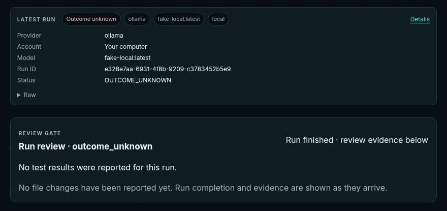

Not confirmed
Deterministic
Must-change repair framing
The preregistered fresh-suite analysis did not confirm the exploratory finding. No correctness or effectiveness claim is supported.
We are developing Nivren as a programme for coordinating specialist models, memory, tools and applications. Broader integrated behaviour is still planned. Public claims are linked to evidence where available, and inconclusive or negative results remain part of the record.
NivKode is a developer environment we are building. In the desktop app, new conversations start on a local model when one is installed.

Each module carries a status. Directions are not presented as released products.
| Module | Status | What it is |
|---|---|---|
| Nivren | In active development | We are developing Nivren around specialist models, memory and tools, with inspectable state and human approval as design goals. |
| NivKode | 0.1.0 · review candidate | NivKode 0.1.0 is a review candidate; release approval and publication are pending. Launch target: Friday 13 November 2026; may move if testing finds issues. About NivKode |
| NivDroid | Internal test build | Nivren Home is the NivDroid internal test build. It is not a public build. |
| NivMac | Direction; no public build | A lightweight, network-connected desktop OS that gives capable older hardware a modern working life. No build yet. |
| Nivren Quark | Planned | Small local models in three planned sizes. Each will ship with its provenance label, or not at all. NQ-0.5B · NQ-1B · NQ-3B |
Current conclusions distinguish deterministic results from exploratory model ratings. No human-rated quality figures are reported here.
Deterministic
The preregistered fresh-suite analysis did not confirm the exploratory finding. No correctness or effectiveness claim is supported.
Deterministic
Both remain inconclusive. R0 has a scorer limitation; R1 is a finite-set deterministic result and does not establish general answer quality.
Model-rated
The route-quality R1 audit, R2 review and local-uplift R0 are model-rated (engine/model not recorded). Their findings are exploratory or inconclusive and provide no human-calibrated figures.
Source: current research result records. Read the research record
Model references distinguish original work, derivatives and external services.
For enquiries about Nivren or press, write to us.